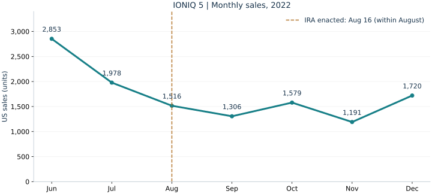

배터리 생산 공제의 관측 사례
LG에너지솔루션의 2024년 4분기 영업손실은 2,255억원. 회사가 밝힌 IRA 세액공제 3,773억원을 제외하면 손실은 6,028억원이다. 별도 생산 지원의 큰 효과를 보여주지만, 북미 완성차 조립 조항의 순효과와 같지 않다. 이는 회사가 제시한 회계적 분해이지 공제가 없었을 경우의 행동까지 반영한 인과 추정이 아니다. I27
판정: 구매 공제 상실과 판매 방식의 변화는 확인된다.
아이오닉의 판매 감소 전부를 IRA 탓으로 돌리거나, 국내 산업 전체의 순손실을 확정할 근거는 부족하다.
IRA의 전기차 세액공제는 국내 기업의 경쟁 조건이 외국 의회의 한 문구로 바뀔 수 있음을 보여준다. 한국에서 조립해 미국에 수출한 아이오닉 5와 EV6는 2022년 8월 북미 최종 조립 요건 시행으로 일반 구매자의 신규 차량 공제 경로에서 제외되었다. 기존 적격 구매자에게 최대 7,500달러였던 혜택이 사라지면서, 적격 경쟁차에 비해 불리한 조건이 생겼다. 다만 경과 규칙이 있었고, 공제액 전체가 모든 소비자의 실질 가격 상승이나 현대차의 손실로 그대로 귀속되는 것은 아니다. I01 · I02
2022년 가을에는 판매 감소를 IRA와 연결하는 보도가 나왔다. 실제 아이오닉 5 판매는 8월 1,516대에서 9월 1,306대로 줄었다. 그러나 6월 2,853대에서 7월 1,978대로 이미 감소하고 있었고, 이후 연간 판매는 2022년 22,982대에서 2023년 33,918대, 2024년 44,400대로 늘었다. 이 자료는 초기 충격 가능성과 이후 회복을 함께 보여주며, 정책이 없었을 때의 판매량을 직접 알려주지는 않는다. I19 · I09 · I10 · I11 · I12 · I06 · I07
회복 과정에는 판매 방식의 전환이 있었다. 2023년 상업용 차량 공제(45W)는 적격 리스 사업자가 공제를 받아 고객의 리스 조건에 반영할 경로를 제공했다. 현대차 경영진도 리스 확대를 대응책으로 설명했다. 따라서 영향은 판매 대수 외에 할인·금융지원 비용, 리스의 잔존가치 위험, 생산 거점 및 공급망 전환 비용까지 보아야 한다. 리스 공제의 수급자는 원칙적으로 소유자인 리스 사업자이며, 고객에게 전액이 자동 이전되는 제도는 아니다. I03 · I04 · I20 · I21
영향은 기업과 생산 위치에 따라 달랐다. 수입 완성차에는 불리한 자격 요건이 생겼지만, 미국 생산 설비를 가진 배터리·부품 기업에는 투자와 수주 기회 및 별도 생산 세액공제가 있었다. 해외 자회사의 이익 증가, 한국 공장의 생산·고용, 한국 수출은 서로 다른 결과다. 이 연구는 이를 구분한 뒤, 제안·수정·의결·시행의 어느 단계에서 대응 가능한 정보가 나타났는지를 묻는다.
단위는 미국 판매 대수이며 구매와 리스를 합산한다. 아이오닉 5와 구형 Ioniq를 구분했다. 가격·재고·마진 자료가 없는 판매표만으로 정책의 순효과를 추정하지 않는다.

| 차종 | 2022 | 2023 | 2024 | 2025 |
|---|---|---|---|---|
| IONIQ 5 | 22,982 I06 | 33,918 I07 | 44,400 I07 | 47,039 I08 |
| IONIQ 6 | — (미출시) | 12,999 I07 | 12,264 I07 | 10,478 I08 |
| EV6 | 20,498 I15 | 18,879 I15 | 21,715 I16 | 12,933 I17 |
| EV9 | — (미출시) | 1,118 I16 | 22,017 I16 | 15,051 I17 |
아이오닉 5는 2023년 +47.6%, 2024년 +30.9% 증가했다. EV6는 2023년 −7.9%, 2024년 +15.0%로 다른 경로를 보였다. EV9의 2023년은 출시 초기이므로 2024년 증가율을 기존 차종의 정책 회복률로 읽을 수 없다. 코나·니로의 전 동력원 합계도 BEV 판매로 합산하지 않았다.
Cox가 2025년 1월 발표한 동일 자료 기준으로 미국 BEV 시장은 2023년 1,212,758대(수정값), 2024년 1,301,411대였다. 이에 대한 아이오닉 5 비중은 2.80% → 3.41%다. 점유율 회복도 ‘IRA가 없었을 경우보다 더 팔렸다’는 인과적 결론은 아니다. I18
| 시점·출처 | 보도 내용 | 추세와 함께 읽기 |
|---|---|---|
| 2022.10.4 조선일보 I19 | 현대차·기아 전기차의 9월 미국 판매 감소를 IRA와 연결해 보도했다. | 당시의 우려와 단기 감소를 보여준다. 법 제정 전부터 판매가 줄었으므로 원인을 하나로 단정하기는 어렵다. |
| 2023.1.26 뉴시스 I20 | 현대차 CFO는 리스 비중을 5% 미만에서 30% 이상으로 확대하겠다는 대응 계획을 설명했다. | 구매 세액공제에서 제외된 뒤 판매 채널을 바꾸는 움직임이 확인된다. |
| 2023.4.25 뉴스핌 I21 | 현대차 실적 설명에서 3월 리스 비중 35%와 IRA 대응 효과가 언급됐다. | 리스 확대를 통해 영향을 완화했다는 기업 측 설명이다. 전체 현대차 판매 중 리스 비중이라는 뜻으로 확대하지 않는다. |
보도의 흐름은 2022년 하반기 판매 타격 우려 → 2023년 리스 확대 대응 → 2023–2024년 판매 회복·확대로 요약할 수 있다. 판매가 늘었다고 부담이 전혀 없었다는 뜻은 아니며, 공제 상실을 보완하는 할인·금융지원과 현지 생산 전환에는 비용이 따른다. 공개 자료만으로 그 비용의 총액까지 판단하지 않는다.
| 부문 | 가능한 불리한 경로 | 수혜·대응 경로 | 근거와 한계 |
|---|---|---|---|
| 현대차·기아의 한국산 미국 판매 BEV | 구매 공제 상실, 가격 경쟁과 금융지원 부담 | 당시 리스 전환, 차종 구성 조정, 현지 생산 | 공제 배제·판매·리스 변화 확인. 모델별 순이익 손실은 미확인. I01 · I20 · I21 |
| 미국 현지 완성차 생산 | 설비 투자·가동 초기 비용, 생산 전환 시간 | 북미 조립 충족 및 미국 판매 기반 | 현대차그룹은 IRA 전인 2022.5.20 조지아 투자 발표. HMGMA 아이오닉 5 생산은 2024.10 시작. 모든 투자를 IRA 탓으로 귀속 불가. I23 · I24 |
| 배터리: LG에너지솔루션·SK온·삼성SDI 등 | 현지 투자·원산지 대응, 낮은 가동률 위험 | 적격 미국 생산에는 별도 45X 생산 공제 가능 | 기업·설비·연도별 자격이 다름. 아래 실적 수치는 LGES만 해당. I27 · I31 |
| 미국 동반 진출 부품사 | 고정비·인력·물류·자금 조달 부담 | 현지 완성차 생산에 대한 수주 기회 | 현대모비스·서연이화 프로젝트 확인. 투자 발표는 수익 실현이나 IRA 단독 효과가 아님. I25 · I26 |
| 한국 생산 중심의 중소·하위 협력사 | 생산 이전 때 국내 주문 감소 위험; 해외 투자 역량 차이 | 미국 공장에 한국산 부품 수출·현지 협업 가능 | 업체별 주문·생산·고용 패널 부재. 위험 경로이며 실현된 총피해로 집계하지 않음. |
| 한국GM·르노코리아·KG모빌리티 등 | 미국향 적격 BEV 및 공급망 노출에 따라 직접 영향 상이 | 차종·수출시장·그룹 생산 배분별 대응 | 현대차 BEV 결과를 모든 국내 완성차 업체에 동일 적용할 근거 없음. |
LG에너지솔루션의 2024년 4분기 영업손실은 2,255억원. 회사가 밝힌 IRA 세액공제 3,773억원을 제외하면 손실은 6,028억원이다. 별도 생산 지원의 큰 효과를 보여주지만, 북미 완성차 조립 조항의 순효과와 같지 않다. 이는 회사가 제시한 회계적 분해이지 공제가 없었을 경우의 행동까지 반영한 인과 추정이 아니다. I27
조지아주 발표 기준 현대모비스는 9.26억달러(2022.11), 서연이화는 약 0.76억달러(2023.2)의 투자 계획을 발표했다. 수주 기회와 자본 투입이 동시에 발생한다. 발표 금액을 실제 집행액·한국의 손실액으로 바꾸어 해석하지 않는다. I25 · I26
산업부 집계에서 미국향 IRA 대상 친환경차(BEV·PHEV·FCEV) 수출은 2022년 약 8.4만대에서 2023년 약 14.4만대로 증가했다. 전 세계 자동차 수출액도 2022년 541억달러, 2023년 709억달러, 2024년 708억달러였다. 이는 ‘IRA 이후 국내 자동차 수출 전반이 붕괴했다’는 설명과 맞지 않지만, 환율·차종 구성·시장 수요를 통제한 정책 효과도 아니다. 수출은 미국 소매판매와 다른 흐름이며, 전 차종 금액을 BEV 성과로 읽지 않는다. I28 · I29
입법이 오랜 기간 진행된다는 사실은 대응의 기회를 제공한다. 그러나 최종 내용이 일찍 확정된다는 뜻은 아니다. 이 사례에서 미국 조립을 우대하는 선행 심사(2021.5.26)부터 제정(2022.8.16)까지는 447일, 북미 조립·제정 직후 적용 문구가 나타난 2022.7.27 공개안부터 제정까지는 20일이다. 긴 논의 속에서도 마지막 수정은 공장 건설 기간보다 훨씬 빠르게 현실화할 수 있다. 기존 조문 변화 흐름과 근거 →
법안·위원장 대안·수정안
조건과 시행일의 차이
차종·공장·부품사
매출과 전환 소요 시간
위원회·본회의·예산절차
담당자 검토와 시나리오
정책 의견·생산·판매 전략
시행 지침까지 추적
지역 조건과 시행일을 함께 추적한다. 미국→북미 확대만 보면 완화지만, 2027년 이후→제정 직후로 바뀌면 해외 생산 기업의 대응 시간은 급감한다. 제목이나 최종 통과 여부만 알리는 시스템으로는 이런 결합을 놓친다.
| 경보 단계 | 탐지 조건 | 담당·준비할 산출물 |
|---|---|---|
| 관찰 | 관련 차종·부품·공장에 걸리는 제안 등장 | 통상·법무: 조항 ID, 원문/버전, 제안자, 제출·상정·채택 상태 구분. 모든 제출안을 동일 위험으로 취급하지 않음. |
| 주의 | 지역·대상·예외·시행일이 기업 노출을 변경 | 통상+판매+구매: 48시간 내 영향 메모를 목표로 설정. 적격 차종·관련 협력사, 전환 기간, 복수 시나리오. |
| 집중 대응 | 위원장 대안·표결 일정·주요 합의로 시행 가능성이 높아지거나 시간이 단축 | 의사결정 책임자: 24시간 내 검토를 목표로 설정. 의견 제출·단계적 시행 요청, 판매/금융 대안, 생산 배분·투자 조건부 계획. |
| 시행 추적 | 제정·행정지침·유권해석·후속 개정·종료 | 법무+사업부: 확정 요건과 실제 자격 갱신. 미채택안은 종료 이력 보존. 2025년 공제 종료 같은 후속 변화도 포함. |
시행 유예 의견과 산업 연합 대응, 기존 공장의 생산 전환 가능성, 차종·판매 채널 조정, 공급업체 현지 협력, 계약의 정책 변경 조건을 사전에 검토할 수 있다. 리스는 이 사건 당시의 대응 사례이며 미래의 대안은 그때의 법령에 맞춰 다시 검증해야 한다. 중소 협력사는 업종 협회·공공기관의 공동 모니터링과 노출 분석을 활용하는 설계가 현실적이다.
조기경보의 목적은 정책을 정확히 예언하거나 피해를 모두 없애는 것이 아니라, 선택 가능한 대응책과 준비 시간을 늘리는 것이다. 현대차그룹은 이미 IRA 전에 미국 공장 투자를 발표했으므로 ‘사전 인지가 없어서 피해가 났다’고 단정할 수 없다. 효과는 탐지 선행 일수, 담당자 인수 시간, 중요한 제안의 누락·오경보, 대응 시점에 남아 있던 선택지로 평가한다. I23
확인일 2026.10.01. 기업 판매 원자료, 정부 제도·수출 자료, 기업 결산, 언론 보도를 구분했다. 원자료 발표값은 회사·시장 집계의 보고치이며 별도 감사자료와 동일하지 않다.
판매·산업 지표 CSV (33행) · 관측값 JSON · 재계산 결과 · 출처 목록 · 배경·함의 독립 보고서
증감률 = (당기/전기 − 1) × 100. 점유율 = 차종 판매 / 같은 연도 미국 BEV 판매 × 100. 월별 2022년 8월은 법 제정 전후가 섞여 있다. 부품 투자액은 발표액, 수출량은 반올림치다. 원자료가 다른 리스 비중은 합치지 않았다. 차종 미출시 연도는 0이 아니라 ‘—’로 표시했다.